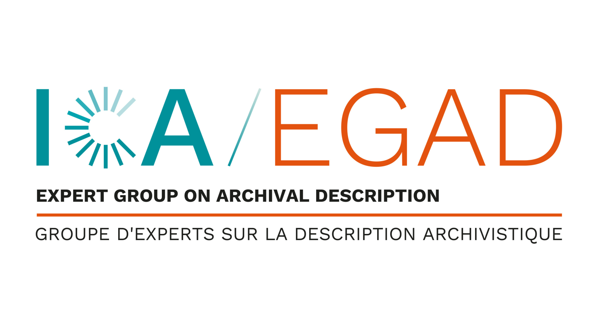

Use the green button to edit the resource (moderated: it may take a few days before changes appear).
The Institute of the National Parks of Belgian Congo was founded in 1934 and was custodian of four protected areas in the DRC and Rwanda during the Belgian colonial era. The institute was also dedicated to the study to the ecology and geology of these national parks. These activities resulted in both a large scientific collection and archival files on their collection and study. The main goal of this thesis was to see if RiC-CM was useful to connect the items with their files and provide context to their collection, usage and later study.